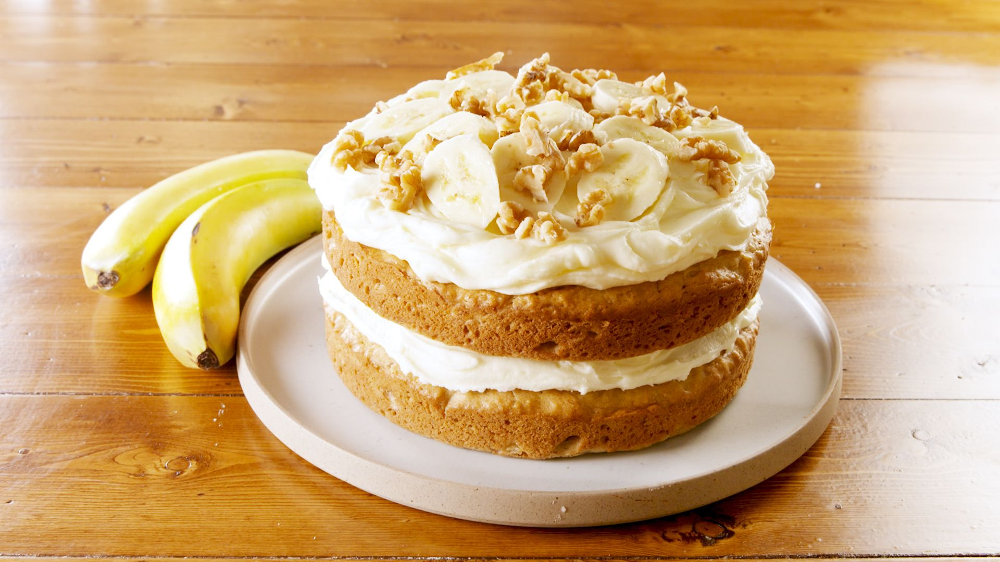

“Life is too short to say no to cake.”-Unknown

Banana Cake
I know this is not a very well-known cake but hear me out. Banana cake is naturally sweet and has an amazing texture.
Plus, depending on how much you eat I'm sure it counts like all the needed fruit intake for the day.
INGRIDIENTS:
- Three large ripe bananas
- Baking powder and all-purpose flour
- Salt and baking soda
- Butter and Eggs
- Grabulated sugar and eggs
- Vanilla
INSTURCTIONS:
- Preheat the oven and grease the pan
- Mash the bananas and combine with the whisked flour and all the other dry ingridients
- Bake the cake for 40-45 minutes
- Allow the cake to cool completely
- Combine the icing ingredients
Enjoy eating fruit like never before.